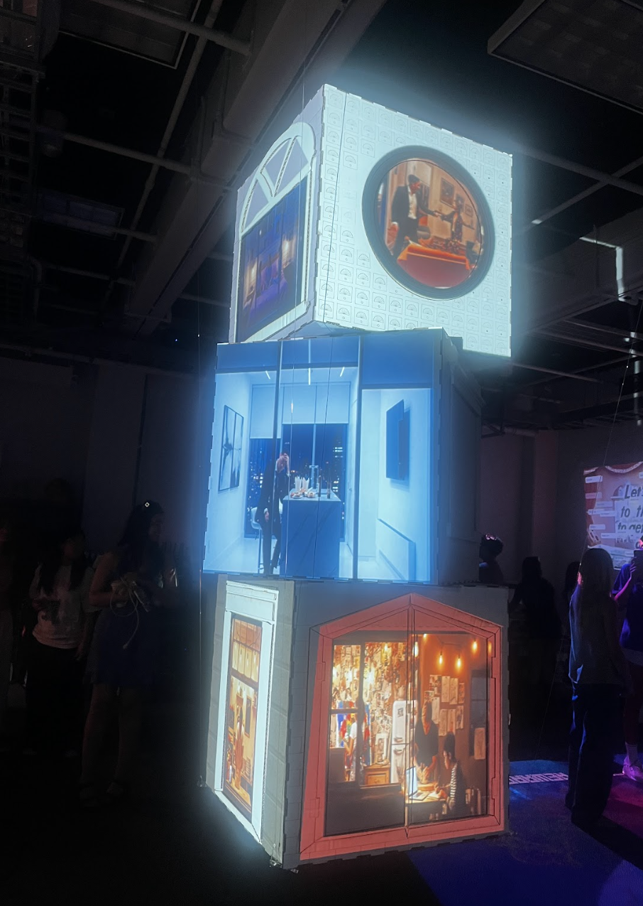
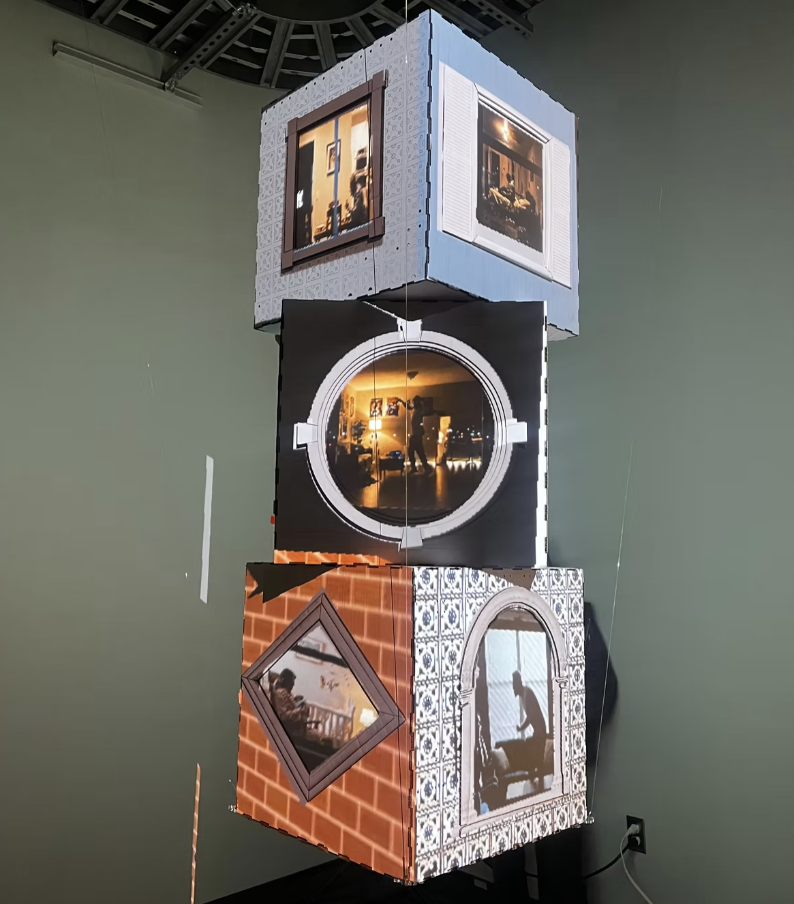
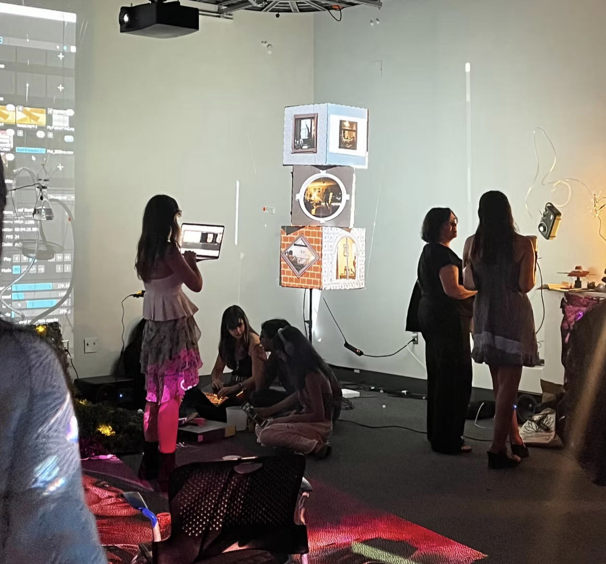
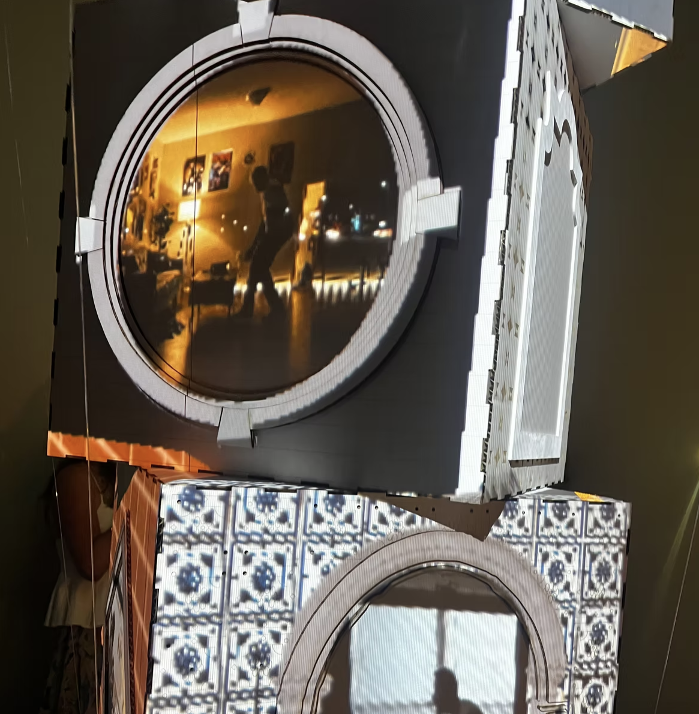
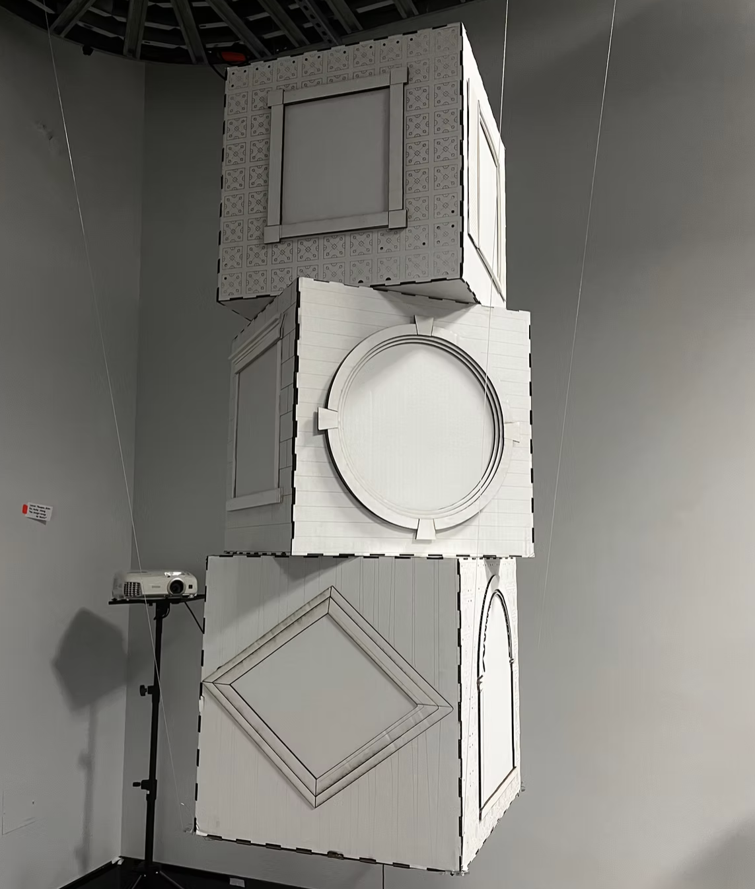

The Stranger through the Window is an art installation that explores the theme of hidden narratives of everyday people through three suspended cubes. The idea for this project originated from Rear Window (1954), a thriller that follows a man who is confined to his apartment that begins to believe his neighbor has committed a murder by just observing them from his rear window. We are one in eight billion, and every individual has their own life, perspective, and challenges that they take with them. What we observe from the outside, reveals nothing about their complex dramas, struggles, and joys unfolding within. Each illuminated window becomes a portal into each person’s inner world, offering intimate glimpses into their complex lives.




